7 Linear Regression - Theory III: Diagnostics
In this session we will get to know the central underlying assumptions for linear regression models. To find out if our model actually works as intended and thus gives us a reliable estimate for the effect of hours on grade, we have to check if we have met these assumptions, and if we did not, we have to correct our model accordingly. Before we do this, we should briefly consider another part of the regression output, the model fit.
7.1 Objectives
- Learn about model fit and its limits
- Understand the statistical assumptions underlying linear regression
- Test for violated assumptions and learn how to correct for those
7.2 Model fit
Let us again inspect the output from the simplest model we computed, regressing the grade solely on the invested hours:
##
## Call:
## lm(formula = grade ~ hours_centered, data = grades)
##
## Residuals:
## Min 1Q Median 3Q Max
## -1.88006 -0.83961 -0.08006 0.77006 2.53881
##
## Coefficients:
## Estimate Std. Error t value Pr(>|t|)
## (Intercept) 2.96750 0.07267 40.835 < 2e-16 ***
## hours_centered -0.05236 0.01159 -4.517 1.07e-05 ***
## ---
## Signif. codes: 0 '***' 0.001 '**' 0.01 '*' 0.05 '.' 0.1 ' ' 1
##
## Residual standard error: 1.028 on 198 degrees of freedom
## Multiple R-squared: 0.09344, Adjusted R-squared: 0.08886
## F-statistic: 20.41 on 1 and 198 DF, p-value: 1.075e-05Up to now, we exclusively talked about the coefficient block. We will return to the “Call” next session and to the “Residuals” later in this session. For now let us focus on the bottom block in the output.
\(R^2\) or R-squared is a measure for the amount of variance in the data that is “explained” by the model. Real world data will always have variance. Not every value will neatly fall onto the mean value of a variable. Rather the data is dispersed around it. The same is true for our dependent variable:
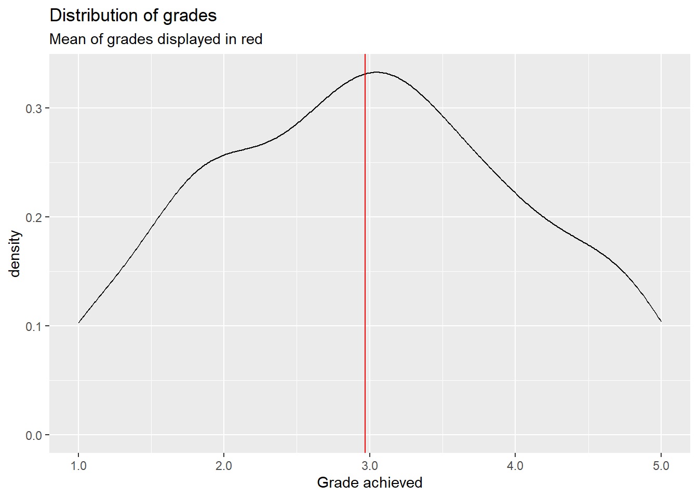
This is a density plot and shows the distribution of a metric variable as a smoothed line. We do not see every individual actual value but the general shape of the data. The red line represent the mean of grade, which is about \(2.97\). Most actual values are not exactly at the mean but are rather dispersed around it, ranging between \(1.0\) and \(5.0\). This is the variance in our outcome variable.
Let us now plot grade against hours_centered and add the regression line from our model above:
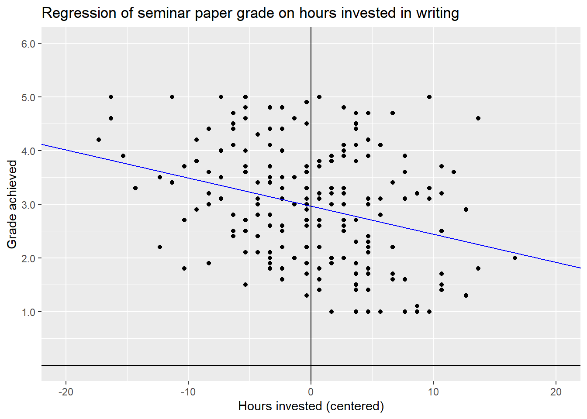
Without our regression line, all we would have is a cloud of points without much order to it. What linear regression does, is trying to bring order into this by fitting a line that best explains the variance of the dependent variable, grade in our case by its relationship to one or multiple dependent variables, here hours_centered. But this linear line can never explain the variance completely. For this it had to pass through every data point. Our line does not. Actually most data points do not lie on the regression line but at some distance to it. You will remember that OLS computes the regression line for which the squared distances are smallest. This is the line that explains most of the variance of \(y\) by its relationship to \(x\), but not all variance is explained. An unexplained part remains. These are the residuals; the distance that points fall from the regression line. \(R^2\) tells us the relative amount of how much we reduced the initial variance by fitting the line and thus explaining a part of said variance.
A \(R^2\) of \(0\) would mean that no variance is explained, a value of \(1\) that all variance is explained. Two highly unlikely outcomes. We will almost always explain something and never explain everything.
In our model \(R^2\) equals \(0.09344\). This means we explained about \(9.3\%\) of the variance of grade by its relationship with hours_centered. That’s nice, but this also means that over \(90\%\) are still unexplained. We will not explain all of the variance, i.e. \(R^2 = 1\), but in general a higher \(R^2\) is desirable.
So what can we do? We can try to add additional variables to the model that help in explaining the variance of the outcome variable. Last session we concluded that the best model to measure the effect of invested hours on the achieved grade would also have to include contact:
##
## Call:
## lm(formula = grade ~ hours_centered + contact, data = grades)
##
## Residuals:
## Min 1Q Median 3Q Max
## -1.85595 -0.74624 -0.02106 0.66648 2.50161
##
## Coefficients:
## Estimate Std. Error t value Pr(>|t|)
## (Intercept) 3.44352 0.10404 33.098 < 2e-16 ***
## hours_centered -0.04967 0.01052 -4.723 4.43e-06 ***
## contactE-Mail -0.46482 0.16785 -2.769 0.00616 **
## contactIn Person -1.02804 0.15240 -6.746 1.67e-10 ***
## ---
## Signif. codes: 0 '***' 0.001 '**' 0.01 '*' 0.05 '.' 0.1 ' ' 1
##
## Residual standard error: 0.9305 on 196 degrees of freedom
## Multiple R-squared: 0.2643, Adjusted R-squared: 0.253
## F-statistic: 23.47 on 3 and 196 DF, p-value: 5.072e-13We can use \(R^2\) to compare the model fit of multiple models. Here the larger model achieved a considerably higher value of \(R^2 = 0.2643\). The model fit improved as we can now explain a higher ratio of the variance in grade.
After \(R^2\) we see another value, Adjusted R-squared. This becomes relevant if we add additional variables to our model. \(R^2\) almost always increases, and never decreases, when adding additional variables to the model, especially if we have few observations. Because of this \(R^2\) can get less reliable when we have many variables and few observations. Adjusted R-squared corrects for this by including both factors in the calculation. When we have many observations the differences are negligible. This is true for our case. We have relatively many observations and few variables in our model, so the values of both measures are rather close. But in cases where this relationship is not as favorable, adjusted R-squared should be used in place of the regular \(R^2\).
The block in our output also gives us the Residual standard error. As we have seen above, most actual data point do not lie on the regression line but some distance away from it. These are the residuals. Thus their standard error basically tells us how much we miss the spot on average. As it is given in units of the dependent variable, we can say that the estimates for grade based on our second model are on average \(0.93\) off. A considerable amount, as this is almost one whole grading step. This is still an improvement from the \(1.028\) in the first model but nevertheless a substantial error.
The last line in the output gives us two connected measures. The F-statistic is the test statistic for \(R^2\) and is used the compute the corresponding p-value. In this case we are testing if the \(R^2\) our model returned based on our sample is possible, when the actual population value of \(R^2\) is \(0\). In other words, could we have achieved this \(R^2\) by chance if the independent variables in our model actually do not explain part of the variance in the population? Both of our models have very small p-values, so it is highly unlikely that we have just explained some variance by chance. This gives further credibility to our model specification.
We can conclude that the second model was an improvement over the first. But can we do more? Sure; we can always add additional explanatory variables:
##
## Call:
## lm(formula = grade ~ hours_centered + previous_grades_centered +
## attendance + contact, data = grades)
##
## Residuals:
## Min 1Q Median 3Q Max
## -1.3835 -0.2525 0.0167 0.2678 0.9347
##
## Coefficients:
## Estimate Std. Error t value Pr(>|t|)
## (Intercept) 3.617949 0.068077 53.145 < 2e-16 ***
## hours_centered -0.050830 0.004433 -11.466 < 2e-16 ***
## previous_grades_centered 0.874123 0.028657 30.503 < 2e-16 ***
## attendanceTRUE -0.324653 0.065781 -4.935 1.72e-06 ***
## contactE-Mail -0.413808 0.069817 -5.927 1.39e-08 ***
## contactIn Person -0.853252 0.063964 -13.340 < 2e-16 ***
## ---
## Signif. codes: 0 '***' 0.001 '**' 0.01 '*' 0.05 '.' 0.1 ' ' 1
##
## Residual standard error: 0.3869 on 194 degrees of freedom
## Multiple R-squared: 0.8741, Adjusted R-squared: 0.8709
## F-statistic: 269.4 on 5 and 194 DF, p-value: < 2.2e-16The p-value is even lower, and the F-statistic even higher, compared to our second model, but this was never an issue. What is more interesting is that we have substantially increased \(R^2\) and decreased the residual standard error. As we have concluded last week, this larger model is better at predicting the actual values of grade. Thus the explained variance has to increase and the average error in estimating y has to decrease. But is this the better model? The values on the model fit would suggest so. And this also is true, if our aim is predicting grade to the best of our abilities. But if our aim is still measuring the effect of hours on grade we know from our DAG that we do not have to or even should not control for the additional variables to get an unbiased estimator for the effect of interest.
What can we take away from this? While the model fit measures are an important tool for comparing multiple possible models and better values are desirable in general, it should not be our goal to just max out all measures and declare this model the “winner”. It is never that easy in statistics. One thing we can never replace is thorough theoretical work before even computing our first model. Based on our DAG, if it is correct, we know that we do not have to control for previous grades and attendance. Including them may give us a larger \(R^2\), but is still not the correct way to build our model.
Based on this our best model is still the second one:
##
## Call:
## lm(formula = grade ~ hours_centered + contact, data = grades)
##
## Residuals:
## Min 1Q Median 3Q Max
## -1.85595 -0.74624 -0.02106 0.66648 2.50161
##
## Coefficients:
## Estimate Std. Error t value Pr(>|t|)
## (Intercept) 3.44352 0.10404 33.098 < 2e-16 ***
## hours_centered -0.04967 0.01052 -4.723 4.43e-06 ***
## contactE-Mail -0.46482 0.16785 -2.769 0.00616 **
## contactIn Person -1.02804 0.15240 -6.746 1.67e-10 ***
## ---
## Signif. codes: 0 '***' 0.001 '**' 0.01 '*' 0.05 '.' 0.1 ' ' 1
##
## Residual standard error: 0.9305 on 196 degrees of freedom
## Multiple R-squared: 0.2643, Adjusted R-squared: 0.253
## F-statistic: 23.47 on 3 and 196 DF, p-value: 5.072e-137.3 Regression diagnostics
As linear regression is a statistical technique, there are certain statistical assumptions we have to meet. If we violate those, the best laid plans may falter and our results may be not as robust as we hoped. Let us go through these assumptions and the tests to check for them one by one.
7.3.1 Linearity
The name already gives it away, a linear regression is used to estimate linear relationships between variables. For this to work, the relationships actually have to be linear. But a relationship between two variables can have other functional forms. Consider this for example:
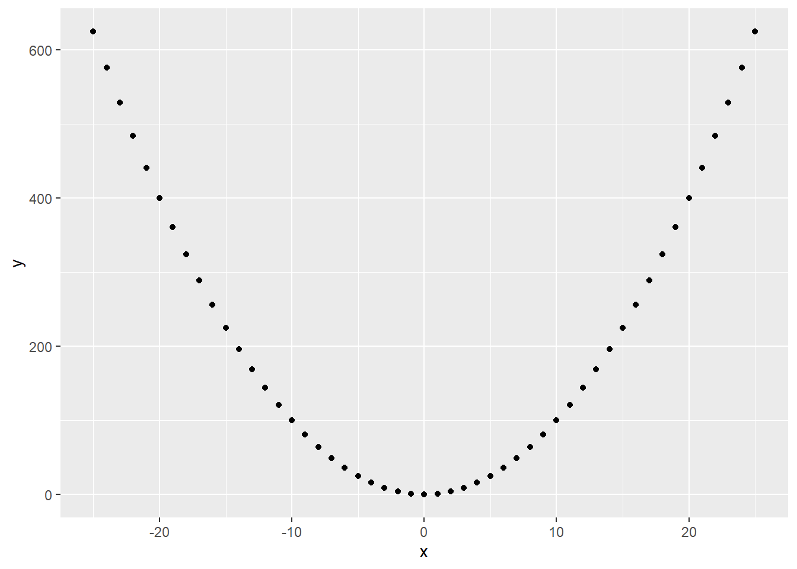
The relationship is clearly not linear. But we can still fit a regression and get a result:
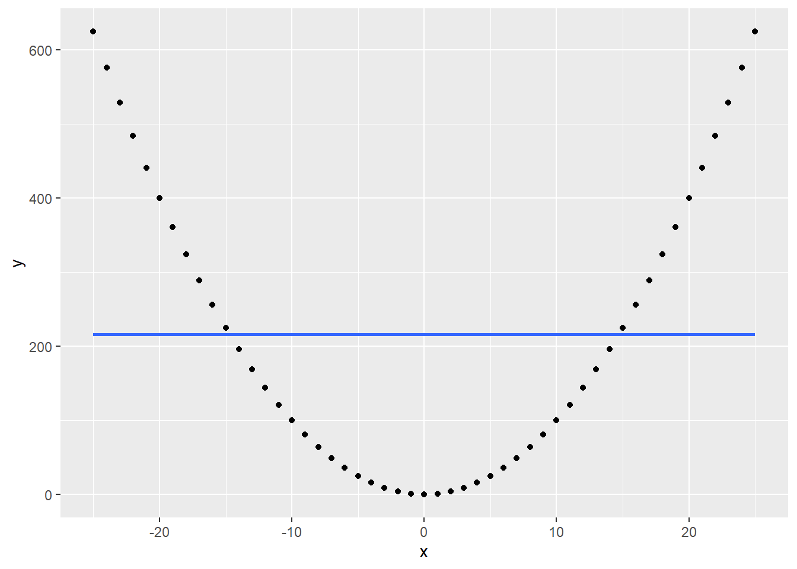
The regression line shows us that x and y are completely uncorrelated. This is clearly not true, but as our linear regression assumes linearity, it tries to model the relationship in linear terms.
What we can do in such cases is to transform the variable in question in a non-linear way. Here the quadratic relationship is easy to spot, so if we transform \(x\) to \(x^2\), this happens:
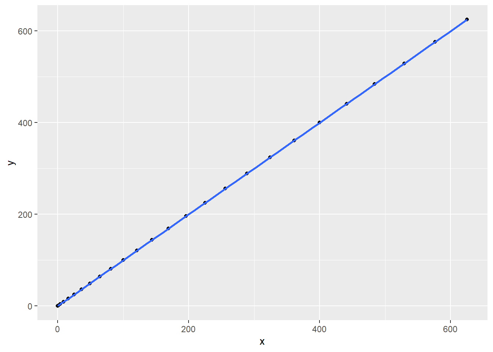
The non-linear relationship between x and y has been transformed into a linear one.
For real world data, the non-linearity most often is not as straightforward to spot as in this example. A first step to approach this, is inspecting a scatterplot matrix. This is usually done before starting to model to identify relationships between the variables used.
## Warning: package 'GGally' was built under R version 4.2.3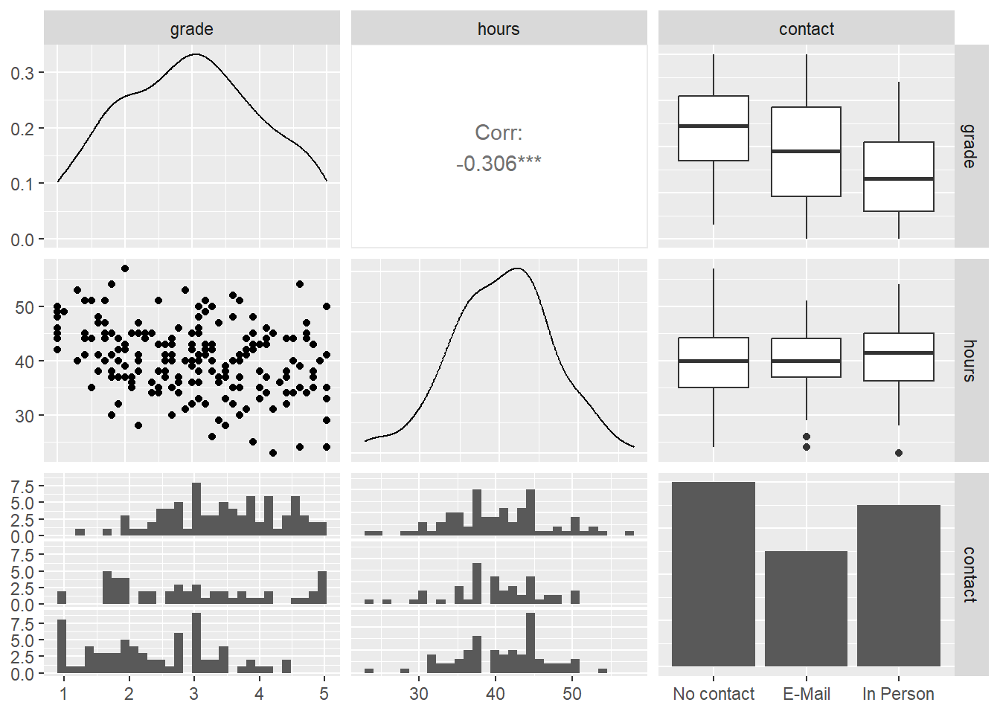
The diagonal displays the distribution of all variables included. Here metric variables are displayed as density plots and categorical variables as bar plots. Below and above the diagonal the relationship between two variables is shown. The scatterplot on the left of the second row is the one between hours and grade we have already seen several times. There is no indication of non-linearity here. What we have not inspected yet, is the relationship between contact and the two other variables.
The bottom row contains histograms of the two metric variables by the category of contact, the right column boxplots for the same combination. Without going into too much detail on both types of plots, both show us how the distribution for both metric variables changes by category. The more personal the contact with the lecturer, the lower the center of the distribution of final grades is. This makes sense, as we have already seen this correlation in the results of our model. Between hours and contact there seems to be no correlation. The amount of hours a student invests in writing the paper, does not lower the hours invested in a systematic way.
But this does not clear the model of suspicions of non-linearity just yet. Even when all pairwise relationships are linear, controlling for multiple variables at the same time can introduce non-linearity for this specific combination. One way to approach this is to inspect the Residuals vs. Fitted plot. As the name suggests, this plots the fitted values, i.e. the estimates for our dependent variables based on the model, against the residuals of the dependent variable. When the relationship is linear, we should see a more or less straight line along the x-axis, where \(y = 0\).
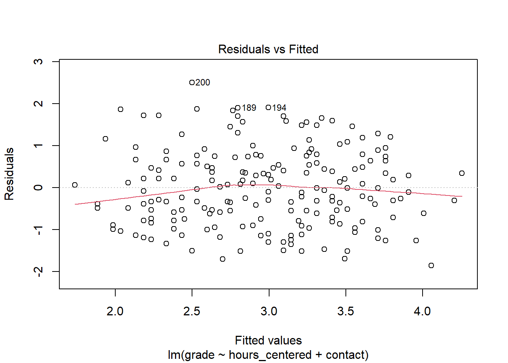
For many use cases, the line is straight enough, indicating no clear and strong patterns of non-linearity. Still the residuals seem to be slightly off for very good and very bad estimated grades.
Besides violating the assumption of linearity, patterns in the residuals vs. fitted plot can also indicate that there is some important explanatory variable missing from the model. We will return to this after we have applied the further tests and discussed the remaining assumptions.
7.3.2 Normally distributed residuals
Another assumptions in linear regression is that the residuals are normally distributed. This is especially relevant for a sample with a small \(n\) as the test statistics tend to get unreliable in these cases if the residuals are not normally distributed. For larger samples, as in our case, this is not as problematic. Still, systematic deviations from normality can indicate that the model is not parsimonious. This means that either not all relevant variables are included or that variables are included that are not necessary for the model.
We get a first idea of the distribution from the model summary. This shows us the median as well as the 25- & 75-percentiles and the minimum and maximum values. While strong and clear violations against the normality assumption could already be visible here, these measures are not enough to actually test for normality. A more informative and accurate approach is using a Q-Q plot. This plots the standardizes residuals, the residuals divided by their standard error, against a theoretical normal distribution. If the residuals are perfectly normally distributed, each data point lies on the diagonal, if they are not they move away from the line. Small deviations, especially in the tails, should not be over emphasized. What we are looking for are clear and systematic deviations.
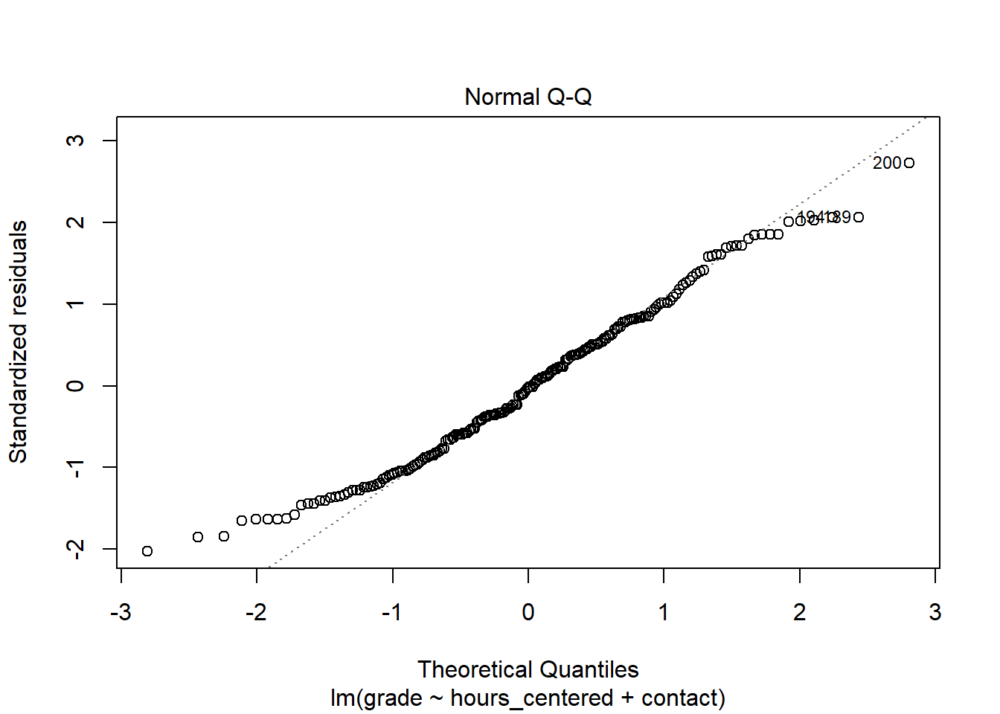
In the case of our model, most data points lie on the diagonal, while there are some small deviations in the tails. As our n is large enough, this should not be problematic. It may indicate that the model is not perfectly parsimonious but there is no clear cause for concern here.
7.3.3 Homoscedasticity
The homoscedasticity assumption states that the residuals are expected to have a constant variance over the whole range of the dependent variable. Let us assume that the variance of our residuals would be lower for very good grades and higher for very bad ones. This would indicate that we can make more accurate estimates for better grades than for worse ones as a small variance would indicate smaller residuals and thus a smaller error. For the assumption to hold we must be able to make about the same quality of estimates, be it high or low, for all values of grade.
The problem is that the computation of the standard errors, test statistics and p-values depends on this assumption. If the assumption is violated, if we have heteroscedasticity, these measures are not reliable anymore.
The problem often occurs when the dependent variable is not symmetric. In the scatterplot matrix above, we already saw that grade is fairly symmetrically distributed, so we would not expect problems here. If our dependent variable was asymmetrical, transforming it to be more symmetrical, e.g. by using the logarithm or a square root, could help.
To check for problems with heteroscedasticity, we can use the Scale-Location plot. This plots the fitted values against the square root of the standardized residuals. For homoscedasticity to hold, we should see our data points as a horizontal band with more or less constant width running from the left to the right. The same goes for the plotted line.
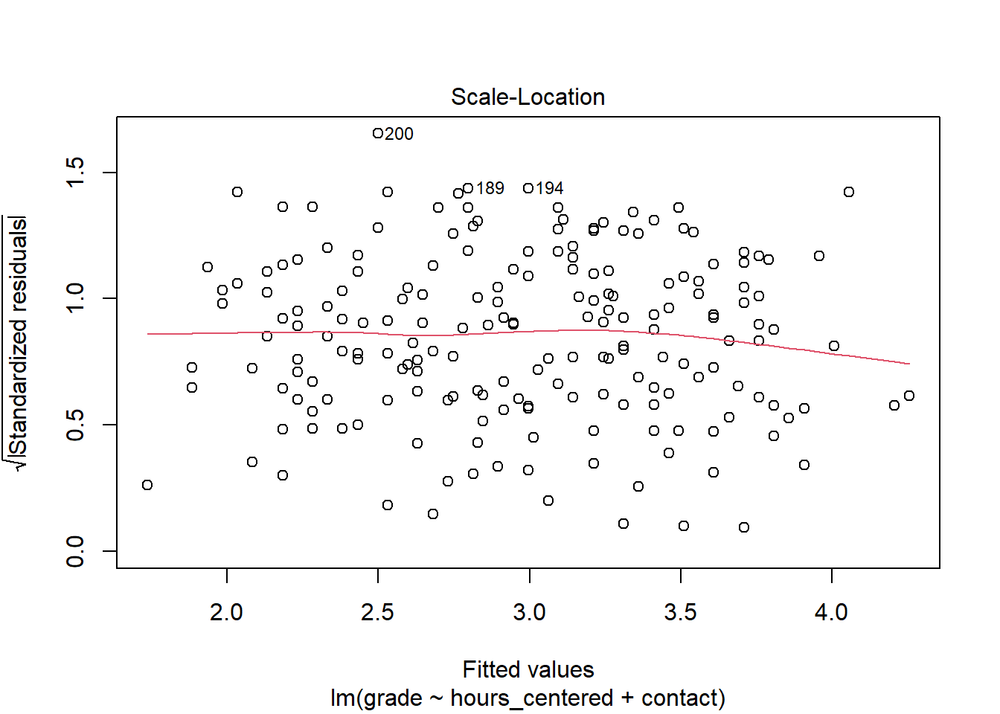
In our case the homoscedasticity assumption holds. Slight variations are not problematic and overall the variance is constant.
7.3.4 No overly influential data points
Observations can get highly influential if they have unusual values. Sometimes these are extremely low or high values on some variable. But even “normal” values on two or more variables can get unusual in their combination. Imagine a student with \(60\) invested hours. A high value but not overly extreme. Now the same student had in person contact with their lecturer but still received a \(5.0\). This could potentially be an influential data point as this combination is unusual in terms of what the model expects. In case of our model this observation would most probably not be overly influential. But imagine the same observation with \(300\) invested hours. Such extreme cases can influence the fit by figuratively “pulling” the regression line in their direction.
We can divide influential data points into unusual values on the dependent variable, outliers, and unusual values on independent variables, high leverage points. The latter have high leverage because they “pull” on the regression lines and thus change the slope. As a rule of thumb, we can consider values with standardized residuals over \(3\) or under \(-3\) outliers. Concerning the dependent variables we can compute the leverage statistic. Here values that exceed \(2 * (p + 1) / n\), where \(p\) is the number of predictors, are considered as having high leverage. We can inspect both at the same time in the Residuals vs. Leverage plot.
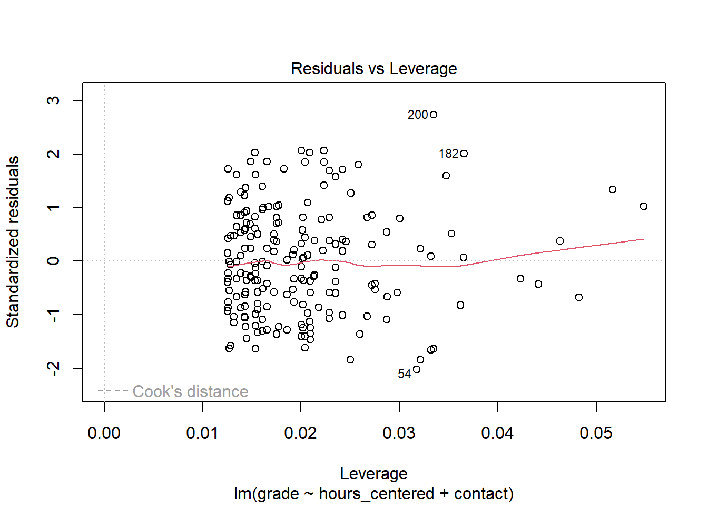
We can see that there are no clear outliers. To assess points with high leverage we first have to compute the threshold as: \(2 * (3 + 1) / 200 = 0.04\). Note that while we have two independent variables in our model, we actually have three predictors due to our categorical variable. Thus we have to compute with \(p = 3\) instead of \(p = 2\). We can see that there are a number of points that exceed this value. The question is, why do these values exist? Sometimes these are measurement errors, extreme values or unusual combinations that come down to the researcher recording the wrong values into the data set. In these cases we can try to fix the errors or remove the observations from the data. As we have several values with high leverage, this seems highly unlikely. But if we had not simulated the data ourselves and knew that there is no error, we should at least check. What seems more probable though, and is often the actual root of high leverage, is that there are variables missing from the model that could explain the high values. In this case the values should be lower after we include the missing variables into the model. We will return to this later.
We also may not have a serious problem here. Leverage on its own does not have to be problematic. Some data points will always be more influential than others and remember that the cutoff is always just a rule of thumb. As said above, it is the combination of unusual values that tends to get problematic. We can check for observations that are outliers and have high leverage visually in our plot. Problematic observations tend to gather in the upper and lower right corners. As neither are populated for our model, we can not really conclude that we have overly influential data points.
7.3.5 No (multi)collinearity
The final assumption we will discuss here, is the absence of (high) collinearity between the predictor variables. Collinearity is present, if two independent variables are highly correlated with each other. This can become a problem as it gets harder to individually estimate the effects for both variables on the outcome as the collinear variables vary together at the same time.
Often collinearity can already be spotted in the correlation matrix. Considering our matrix above we saw no clear indication that hours and contact are correlated. But the problem can get more complicated if we include three or more independent variables in our model. While none of the pairs of variables may be highly correlated, correlation may exist for a set of three or more of those variables. In these cases we speak of multicollinearity. We can not spot this in a correlation matrix, but there is an easy to use measure available.
The variance inflation factor (VIF) can be used to inspect (multi)collinearity between two or more independent variables accurately. A VIF of \(1\) would indicate no collinearity. For real world data this is almost never true as some amount of collinearity always exists. But in general we can say that the VIF should be near \(1\) and should not exceed a value of \(5\).
Let us compute the measure for our model with hours_centered and contact:
## Warning: package 'car' was built under R version 4.2.3## hours_centered contact
## 1.004352 1.004352Both values are very close to \(1\) so we can conclude that we did not violate the assumption. But what could we do, if we did? One approach is to just delete one of the highly correlated independent variables from the model. As they vary together, it may be save to exclude one of them without losing to much information. Another approach would be to combine both variables into a new measure. Let us imagine that besides contact we would have another variable in our model, measuring how well a student feels supported by their lecturer in writing the paper. We could also imagine both variables being strongly correlated as they measure comparable concepts. We could then either drop one of the variables, maybe losing some information in the process, or we could combine both into a new variable which measures the form and the feeling of support at the same time, maybe leading to a more accurate estimate while at the same time eliminating the problem of collinearity. Which one is the right solution depends on the specific case.
7.4 Returning to our research question
When we tested for linearity above, we saw a mild pattern in the data which is not explainable by a violation of the assumption of linearity and thus could be an indication of a missing relevant explanatory variable in our model. Some of the other tests also supported this notion. The Q-Q plot showed us that the residuals have some slight deviations from normality in the tails. While these deviations are small enough to not cause concern on their own, taken together with the residuals vs. fitted plot this gives more weight to the suspicion that some important variable is missing. We also identified some observations with high leverage. While we can rule out errors in our data, the high leverage could also be explainable by a missing variable.
But which variable could be missing from the model? If our DAG is correct, we can rule out attendance and previous_grades. We did assume that contact is a confounder for hours and grade and thus included it in our model. Of course we could also miss a variable that is not in our data at all, or even one that is not measureable. As we did simulate the data, we know this is not true, but with real world data this is always a possibility.
Let us think about the contactvariable once more. We did assume, that the more personal the contact, the more efficiently the time working on the paper can be used. And here may lie the problem. The way we included contact in the model is not the way we reasoned in our DAG. It would be correct if we assumed that the more personal the contact, the less time is invested. But we already saw in the scatterplot matrix that there is no such relationship between the variables. To specify the effect of contact in the model correctly, reflecting the idea of a more efficient use of time the closer the contact was, we have to include it as an interaction with hours.
7.4.1 Interactions
In an interaction, we assume that the effect of one variable differs based on the value of another variable. Let us return to the formula for a multiple regression with two variables:
\[y = \beta_0 + \beta_1*x_1 + \beta_2*x_2 + \epsilon\]
Here we assume that the value of \(y\) varies with the value of \(x_1\) and \(x_2\) as indicated by the coefficients \(\beta_1\) and \(\beta_2\).
But we could also follow the notion that the value of \(x_1\) influences \(y\) differently based on the value of \(x_2\). For example the effect of \(x_1\) on \(y\) could be higher when \(x_2\) also has a high value. This is an interaction and is reflected in the formula by adding an additional multiplicative term between the two dependent variables with an additional associated coefficient:
\[y = \beta_0 + \beta_1*x_1 + \beta_2*x_2 + \beta_3 * x_1 * x_2 + \epsilon\]
To get a better understanding of this, let us return to our model and add an interaction between hours_centered and contact.
##
## Call:
## lm(formula = grade ~ hours_centered + contact + hours_centered *
## contact, data = grades)
##
## Residuals:
## Min 1Q Median 3Q Max
## -1.77816 -0.72882 -0.08719 0.56140 2.53271
##
## Coefficients:
## Estimate Std. Error t value Pr(>|t|)
## (Intercept) 3.44466 0.10345 33.298 < 2e-16 ***
## hours_centered -0.02893 0.01535 -1.885 0.06098 .
## contactE-Mail -0.46775 0.16729 -2.796 0.00569 **
## contactIn Person -1.01493 0.15171 -6.690 2.33e-10 ***
## hours_centered:contactE-Mail -0.02377 0.02657 -0.895 0.37204
## hours_centered:contactIn Person -0.05017 0.02442 -2.055 0.04125 *
## ---
## Signif. codes: 0 '***' 0.001 '**' 0.01 '*' 0.05 '.' 0.1 ' ' 1
##
## Residual standard error: 0.9253 on 194 degrees of freedom
## Multiple R-squared: 0.28, Adjusted R-squared: 0.2615
## F-statistic: 15.09 on 5 and 194 DF, p-value: 1.63e-12How can we interpret these results? While the estimates for the intercept and for having e-mail or personal contact in comparison to having no contact at all have barely changed, the coefficient for the amount of hours invested substantially shrunk to almost half its former value. Until now we assumed that the effect of hours would be the same for each student. Now that we have included an interaction we assume that the effect of hours differs, based on the form of contact a student had.
Let us rewrite our formula for \(\hat{y}\) including the interaction. As we are interacting with a categorical variable with three categories, we have to add two interaction terms. The first for the effect of invested hours when e-mail contact was made and the second for the effect of hours when contact was made in person, in both cases compared to having had no contact.
\[\hat{y} = b_0 + b_{hours\_centered} * x_{hours\_centered} +\\ b_{E-Mail} * x_{E-Mail} + b_{In Person} * x_{In Person} +\\ b_{hours\_E-Mail} * x_{hours\_centered} * x_{E-Mail} +\\ b_{hours\_{In Person}} * x_{hours\_centered} * x_{In Person}\]
Let us now also add the coefficients from the model:
\[\hat{y} = 3.44466 -0.02893 * x_{hours\_centered} -\\ 0.46775 * x_{E-Mail} -1.01493 * x_{In Person} -\\ 0.02377 * x_{hours\_centered} * x_{E-Mail} -\\ 0.05017 * x_{hours\_centered} * x_{In Person}\]
We can now consider the three possible forms of contact one by one.
What happens, when a student had no contact? To explore this, we return to the regression formula and equal \(x_{E-Mail}\) and \(x_{In Person}\) to \(0\), which means that no contact was made beforehand. Note that for now we do not care about the actual value of hours_centered.
\[\hat{y} = 3.44466 -0.02893 *x_{hours\_centered} -\\ 0.46775 * 0 -1.01493 * 0 -\\ 0.02377 * x_{hours\_centered} * 0 -\\ 0.05017 * x_{hours\_centered} * 0\]
This shortens to:
\[\hat{y} = 3.44466 -0.02893 *x_{hours\_centered}\]
For a student who did not make contact, we would estimate the final grade as the intercept minus \(0.02893\) per hour invested more than the mean of hours_centered. Having equaled \(x_{E-Mail}\) and \(x_{In Person}\) to \(0\) not only “switched off” the effects of contact but also removed the interaction effects from the equation, the estimated effect for hours_centered is only its coefficient of \(-0.02893\).
What happens, when a student had e-mail contact?
\[\hat{y} = 3.44466 -0.02893 * x_{hours\_centered} -\\ 0.46775 * 1 -1.01493 * 0 -\\ 0.02377 * x_{hours\_centered} * 1 -\\ 0.05017 * x_{hours\_centered} * 0\]
This shortens to:
\[\hat{y} = 3.44466 -0.02893 *x_{hours\_centered} -\\ 0.46775 -\\ 0.02377 * x_{hours\_centered}\]
and further to:
\[\hat{y} = 2.97691 -0.0527 *x_{hours\_centered}\]
The intercept is reduced by the coefficient of having e-mail contact, but what is actually of interest here is the effect that hours_centerd has. For a student who had e-mail contact, each hour invested above the mean reduces the estimated grade by \(-0.0527\).
We can compute the same for a student with personal contact:
\[\hat{y} = 3.44466 -0.02893 * x_{hours\_centered} -\\ 0.46775 * 0 - 1.01493 * 1 -\\ 0.02377 * x_{hours\_centered} * 0 -\\ 0.05017 * x_{hours\_centered} * 1\]
\[\hat{y} = 3.44466 -0.02893 *x_{hours\_centered} -\\ 1.01493 -\\ 0.05017 * x_{hours\_centered}\]
\[\hat{y} = 2.42973 -0.0791 *x_{hours\_centered}\]
For a student who had in person contact, each hour invested above the mean reduces the estimated grade by \(-0.0791\).
In practice we would have reached these conclusions more quickly by inspecting the output from our model and just subtracting the corresponding interaction effect from the effect for hours_centered, but it is important to understand what happens in the formula to get a full grasp on linear regression models.
In the model without the added interaction we concluded that on average each hour invested above the mean decreases the final grade by about \(-0.5\). Now we see that the effect of hours depends on the form of contact had. This reflects the theoretical assumption from our DAG that time can be used more efficiently the more personal the form of contact was.
The same DAG that informed our best model from last week now lead us to including the interaction. This underlines the importance of thorough theoretical thinking before starting to model. It was not even the case that the DAG was wrong, but our conclusions we drew from it were at least not completely right. If we had invested more time, we could have build the correct model directly. In our case we first needed the regression diagnostics to tell us that something might be off before we figured out our error.
7.4.2 Regression diagnostics (revisited)
We now have a theoretically sound model, but did we also solve the problems indicated in the regression diagnostics?
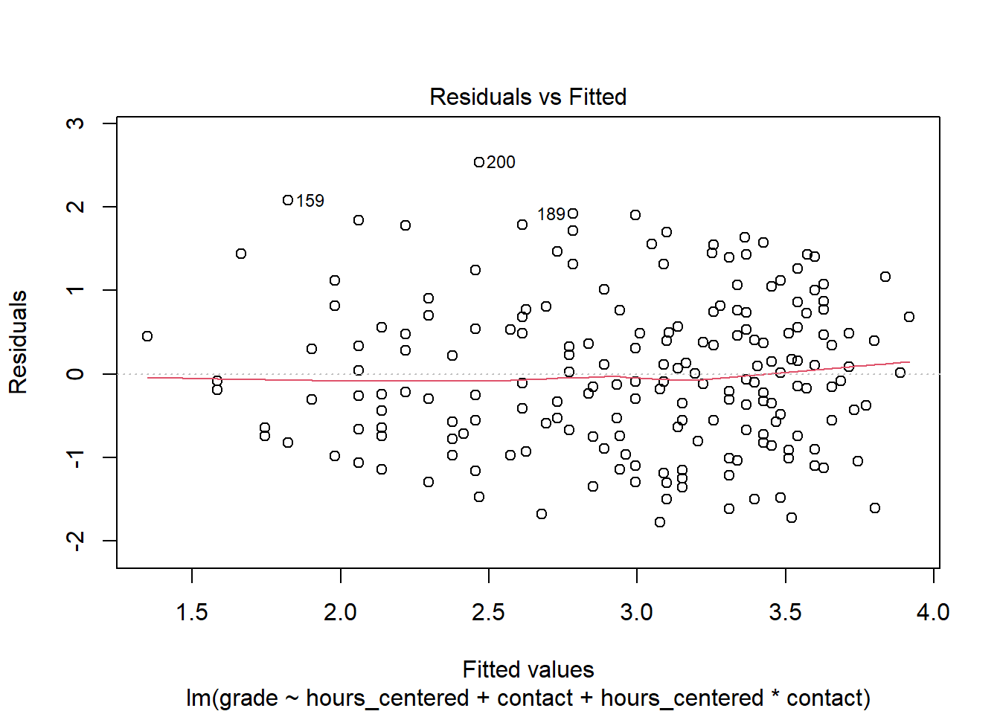
The residuals vs. fitted plot now shows an almost straight horizontal line with no clear visible patterns. This indicates that the problem we saw with our former model actually came down to a missing variable, or to be more precise a missing term in our case.
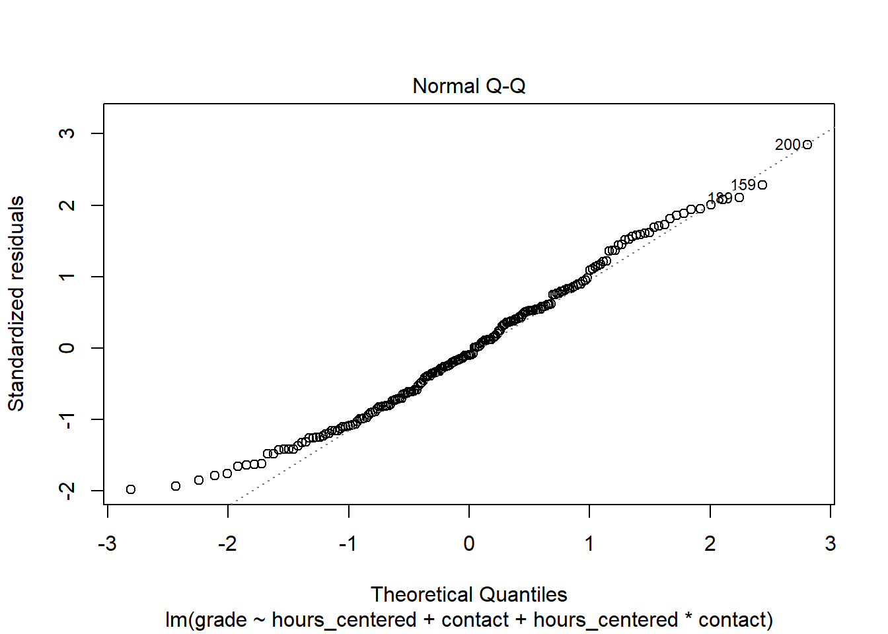
The Q-Q plot now also shows more normally distributed residuals. While there are still some small deviations at the lower tail these do not indicate a remaining severe problem. The deviations are smaller than before and also not drastic in absolute terms. Also, as stated above, violating the normality assumption is less problematic with a high \(n\) and few variables in the model, which is still true for our case.
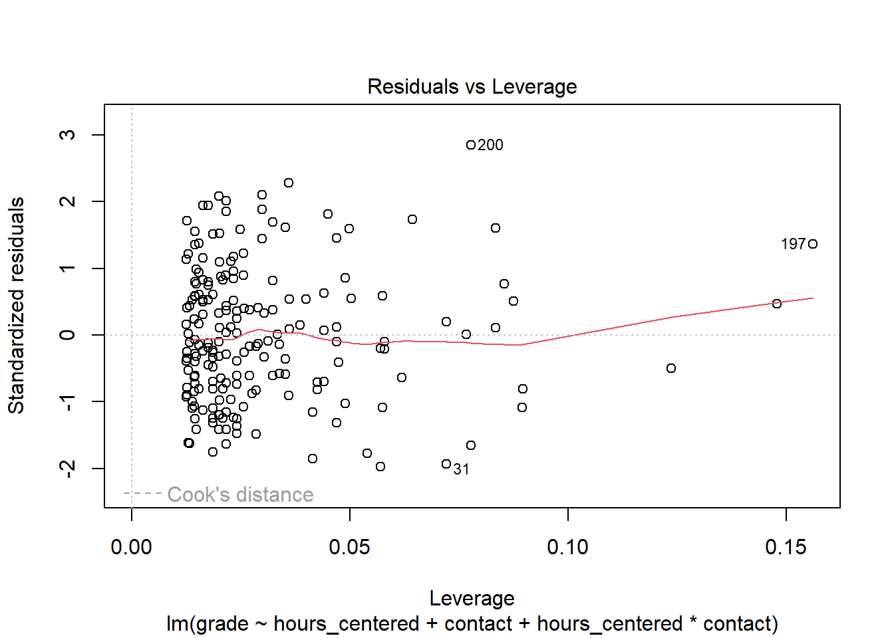
Adding the interaction term actually increased the leverage of the more influential observations. When we recompute the threshold as \(2 * (5 + 1) / 200 = 0.06\), we see that there still some observations with values higher than this. What has not changed, is that there are no clusters of observations in the lower or upper right corners. Overall we can conclude, that this problem is present but negligible. When there are observations that are problematic on both values at the same time, these also get marked by a red dashed line in the plot. This is also not present.
7.5 Conclusion
Over the last three sessions we have learned what a linear regression is, how its formula works, how to interpret the results for different kinds of variables as well as how to check and correct violations of its underlying assumptions.
At the same time we built a model, which in its final version is able to accurately estimate our effect of interest. But we had one immeasurable advantage: We simulated the data ourselves and thus knew where the journey was going to end up from the start. We knew our DAG was correct because the data was simulated in this way and we also knew that there was going to be a interaction effect to solve the remaining diagnostic problems. Sneaky, right? But in real world data, we do not have these advantages. Our DAGs can be incorrect and we may or may not find the missing part of the puzzle that elevates an OK model to a great one. All we can do is think, explore our data, think again, run diagnostics, think again and maybe most importantly do not give up along the way.
In the next session we will return to our NBA data and try to apply everything that we have learned over the last sessions.
7.6 Resources
Most textbooks on statistics include introductions and discussion on using linear regressions. The following resources were the ones actually used in writing the last three sessions:
The textbook from Kohler and Kreuter gives a thorough introduction to linear regression and other statistical concepts. While all code examples are written in Stata, the underlying statistics are the same, no matter the coding language. The book is also available in English.
Kohler, Ulrich & Frauke Kreuter (2017). Datenanalyse mit Stata. Allgemeine Konzepte der Datenanalyse und ihre praktische Anwendung. 5. aktualisierte Auflage. Berlin, Boston: De Gruyter Oldenbourg.
James, Gareth; Daniela Witten; Trevor Hastie & Robert Tibshirani (2021). An Introduction to Statistical Learning. with Applications in R. Second Edition. New York: Springer.
Manderscheid, Katharina (2017). Sozialwissenschaftliche Datenanalyse mit R. Eine Einführung. 2. Auflage.Wiesbaden: Springer VS.